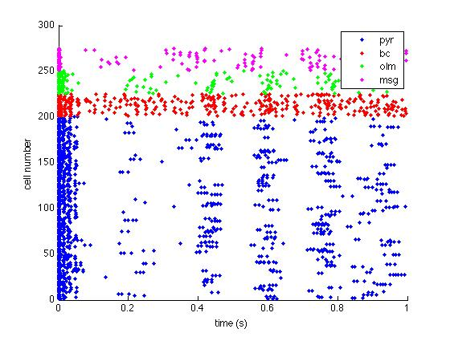
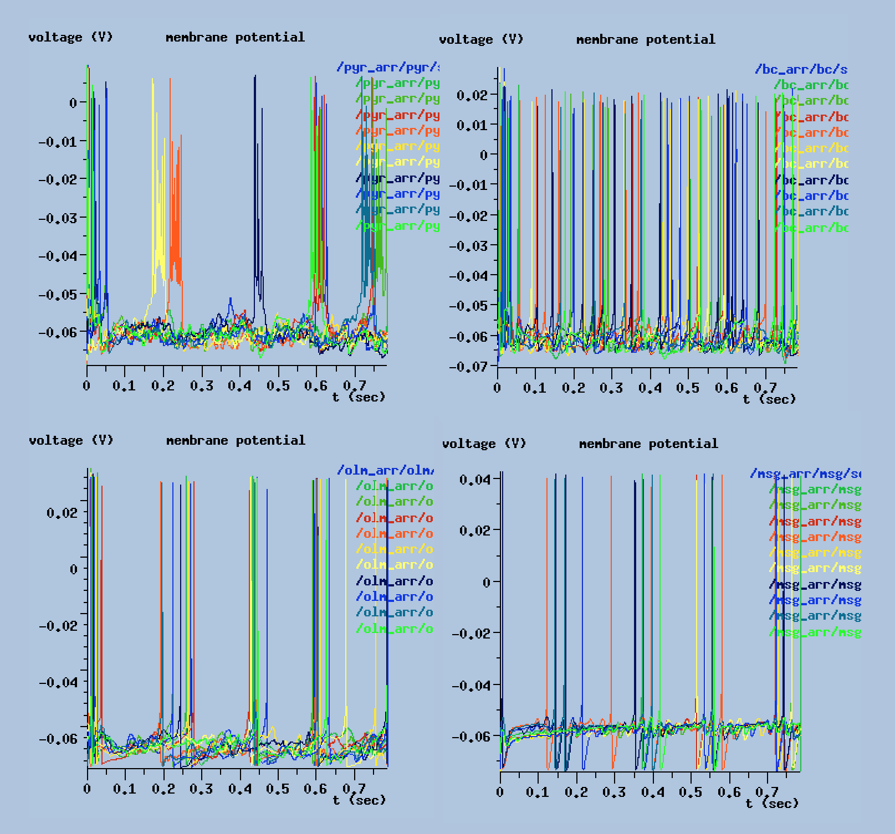
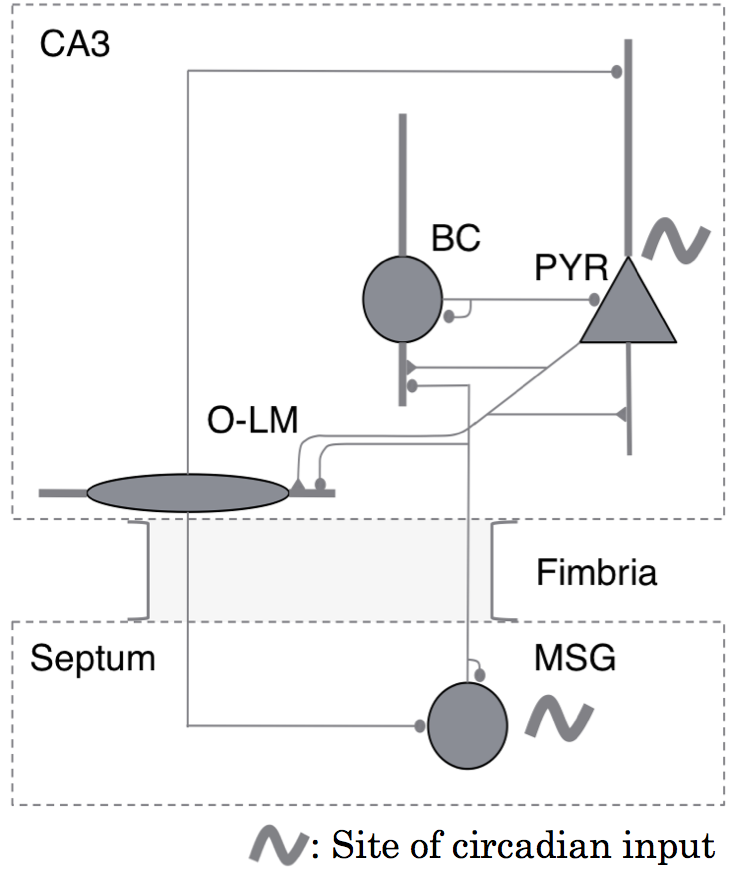
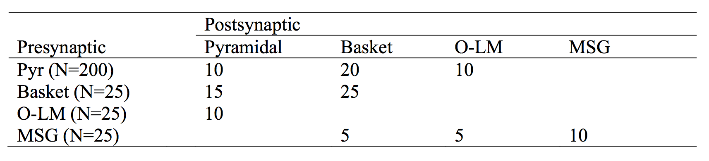

Overview:This model produces the hippocampal CA3 neural network model used in the paper below. It has two modes of operation, a default mode and a circadian mode. In the circadian mode, parameters are swept through a range of values. This model can be quite easily adapted to produce theta and gamma oscillations, as certain parameter sweeps will reveal (see Figures). BASH scripts interact with GENESIS 2.3 to implement parameter sweeps. The model contains four cell types derived from prior papers. CA3 pyramidal are derived from Traub et al (1991); Basket, stratum oriens (O-LM), and Medial Septal GABAergic (MSG) interneurons are taken from Hajos et al (2004). Original paper: Stanley, DA, Talathi, SS, Parekh, MB, Cordiner, D, Zhou, J, Mareci, TH, Ditto, WL, Carney, PR. (2013). Phase shift in the 24-hour rhythm of hippocampal EEG spiking activity in a rat model of temporal lobe epilepsy. J Neurophysiol. 110(5):1070-86. doi: 10.1152/jn.00911.2012. References: Hajos M, Hoffmann WE, Orban G, Kiss T, and Erdi P. Modulation of septo- hippocampal Theta activity by GABAA receptors: an experimental and computational approach. Neuroscience 126: 599-610, 2004. Traub RD, Wong RK, Miles R, and Michelson H. A model of a CA3 hippocampal pyramidal neuron incorporating voltage-clamp data on intrinsic conductances. J Neurophysiol 66: 635-650, 1991. Please address questions to David Stanley (Boston University). For screenshots, see screenshots folder or open README.html Running the default model: 1) Unzip downloaded file (if necessary) 2) Make sure that the genesis binary is in your current path 3) Change directory into simfiles and type genesis main_default.g 4) Data analysis scripts are located in matlab_plotting/extract_data. The file analyse_script.m will automatically load and plot simulation data in Matlab. Running the circadian model: The simfiles folder also contains a script called ssh_script.sh. This is used for setting up batch simulations to conduct parameter sweeps. Some parameters in the model depend on time (see Methods, Stanley 2013) this script enables one to sweep through different times of day. For additional help customizing the model and automatic processing of batch simulations, please contact the authors. Sample model output:
 Figure 1: Full Model, Raster Plot (analyse_script.m)
 Figure 2: Sample Simulation Output (main_default.g)
 Figure 3: Network Structure
 Figure 4: Network Connectivity